Exhaust System - Front Cat. Converter Heat Shield Rattle, Buzz
13-003January 30, 2013
Applies To:
2007-11 MDX - ALL
Front Catalytic Converter Heat Shield Rattles or Buzzes
SYMPTOM
There is a rattle or buzz from the engine compartment that is most noticeable at idle or under light acceleration.
PROBABLE CAUSE
There is a radiator drain access hole in the front lower splash shield where water and road salt can enter and splash onto the warm-up TWC (front warm-up three way catalytic converter) heat shield. The heat shield may rust or corrode to a point where the shield is loose enough to rattle or buzz.
CORRECTIVE ACTION
Replace the warm-up TWC heat shield, and install a splash shield cover.
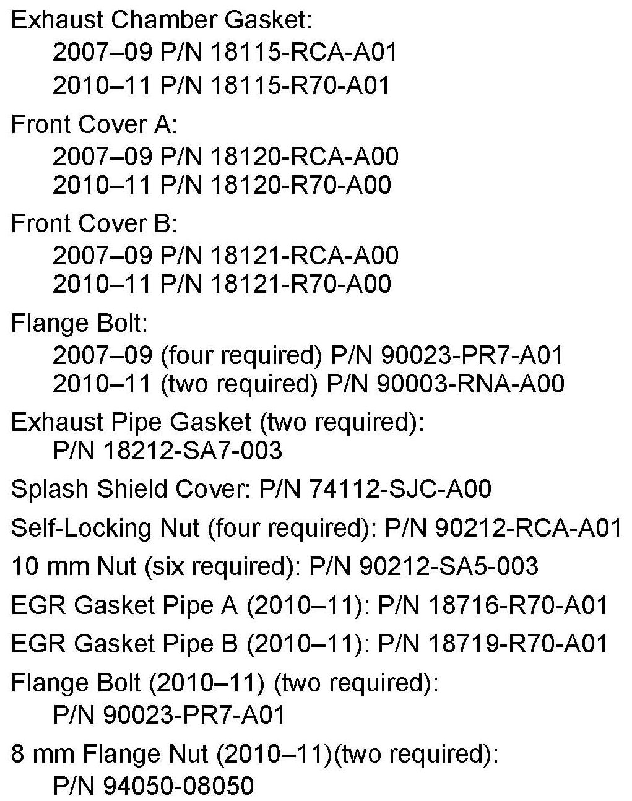
PARTS INFORMATION
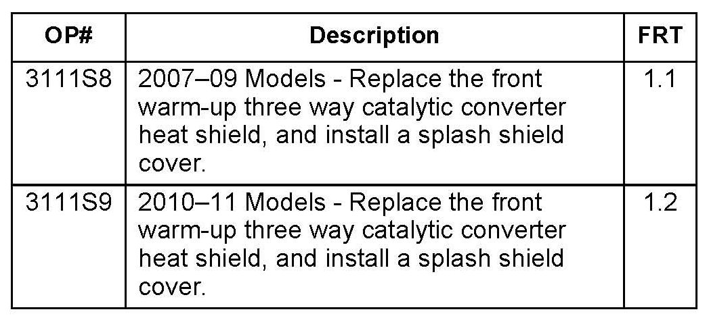
WARRANTY CLAIM INFORMATION
Failed Part: P/N 18120-RCA-A00
Defect Code: 00801
Symptom Code: 04216
Skill Level: Repair Technician
REPAIR PROCEDURE
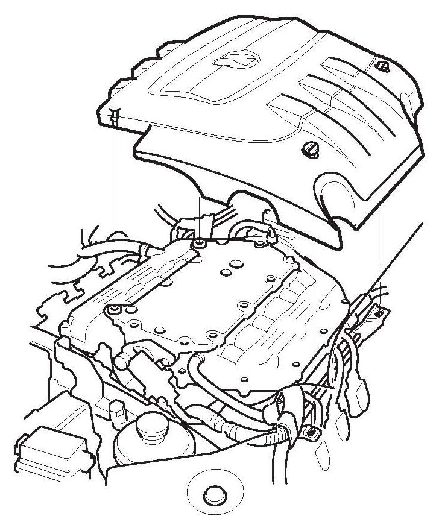
1. Remove the engine cover.
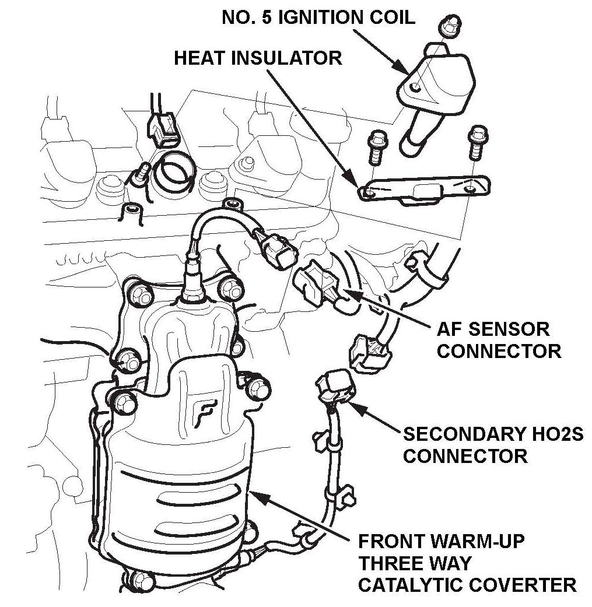
2. 2010-11 MDX only: Remove the No.5 ignition coil and the heat insulator.
3. Disconnect the front (Bank 2) A/F Sensor 6P and secondary HO2S 4P connectors.
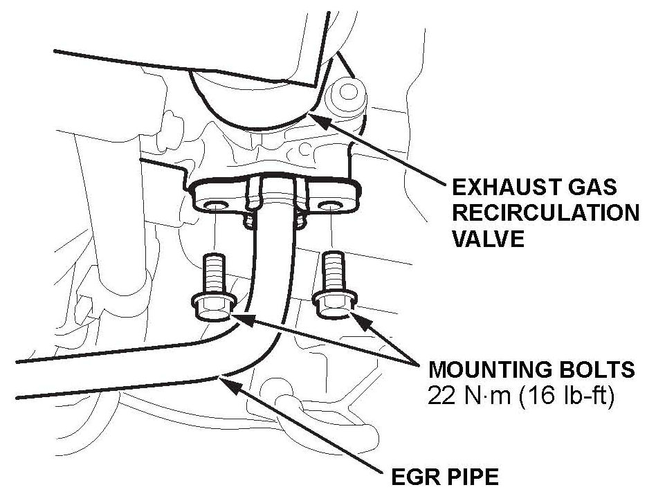
4. 2010~11 MDX only: Remove the EGR pipe upper mounting bolts.
5. Place a piece of cardboard or some other barrier between the front of the warm-up TWC and the radiator to protect the radiator from damage.
6. Raise the vehicle.
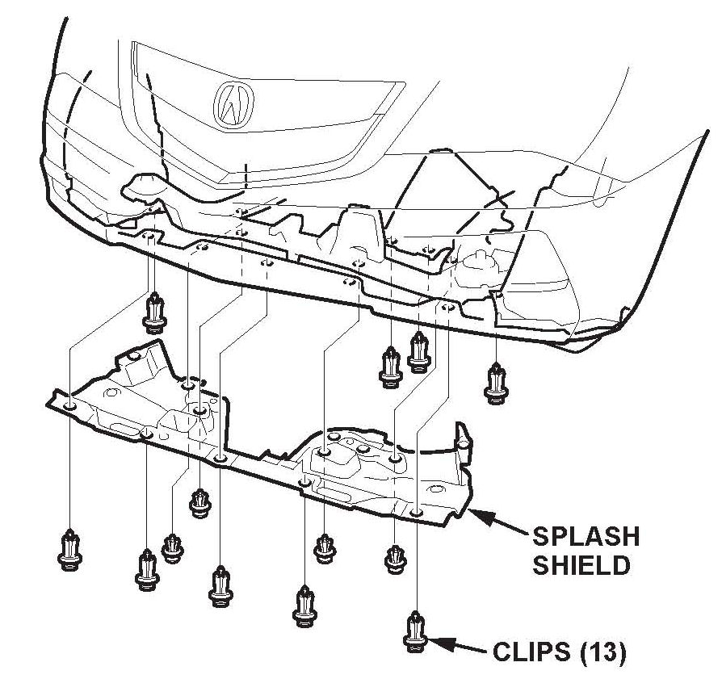
7. Remove the lower front splash shield.
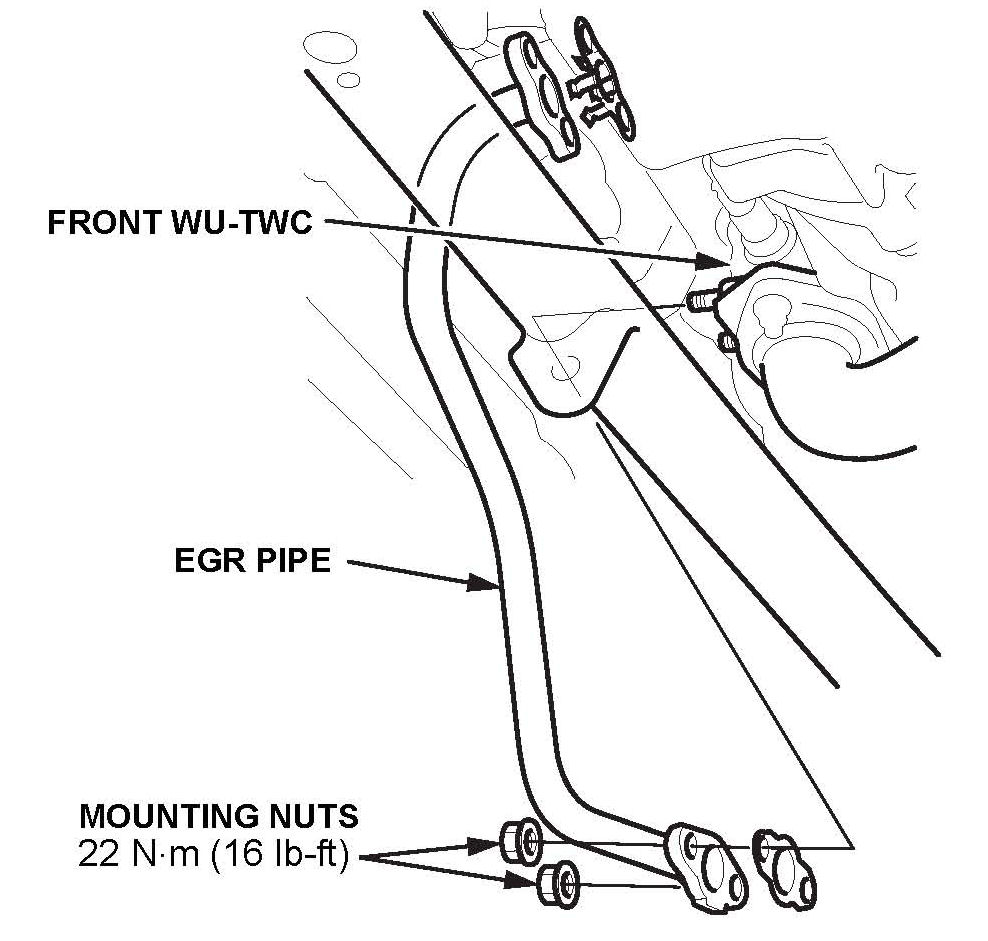
8. 2010-11 MDX only: Remove the EGR pipe lower mounting nuts.
9. 2010-11 MDX only: Remove the EGR pipe.
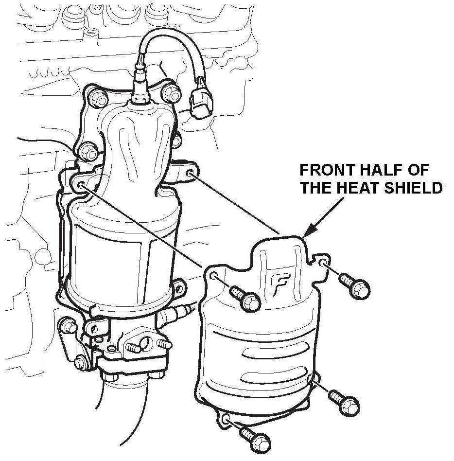
10. Remove the two lower heat shield bolts.
NOTE:
If the bolts are severely corroded, remove them using best shop practices. Do not use an air chisel as this may cause internal damage to the warm-up TWC, the A/F sensor, or the secondary HO2S.
11. Remove the two upper heat shield bolts, and remove the front half of the heat shield.
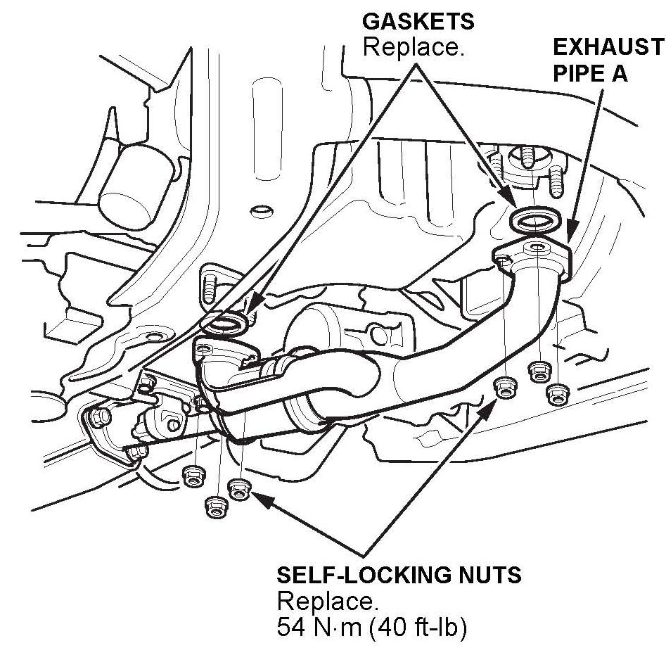
12. Remove the nuts that attach the A-pipe to the front and rear warm-up TWCs and allow the pipe to hang from its hanger.
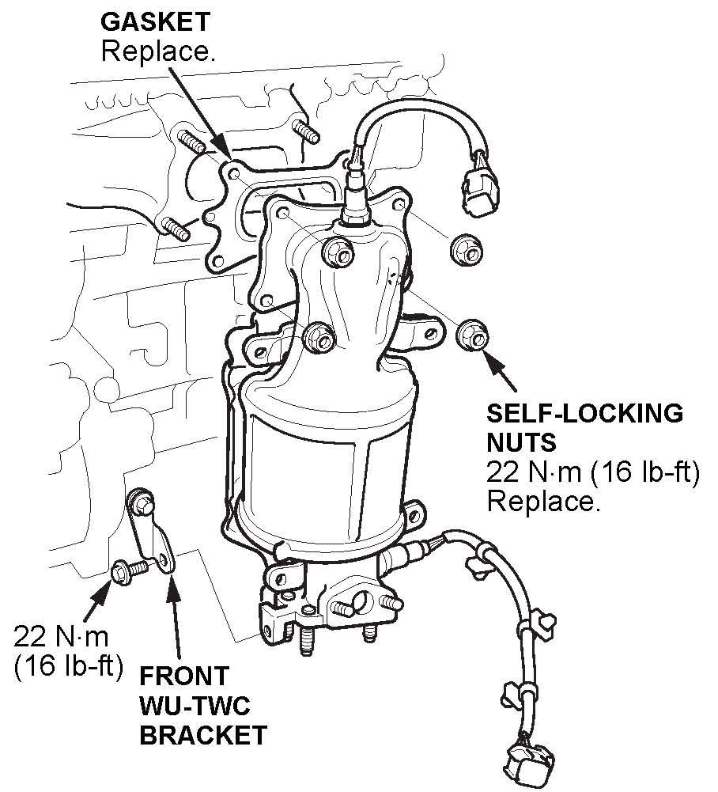
13. Remove the four nuts that attach the front warm-up TWC to the cylinder head.
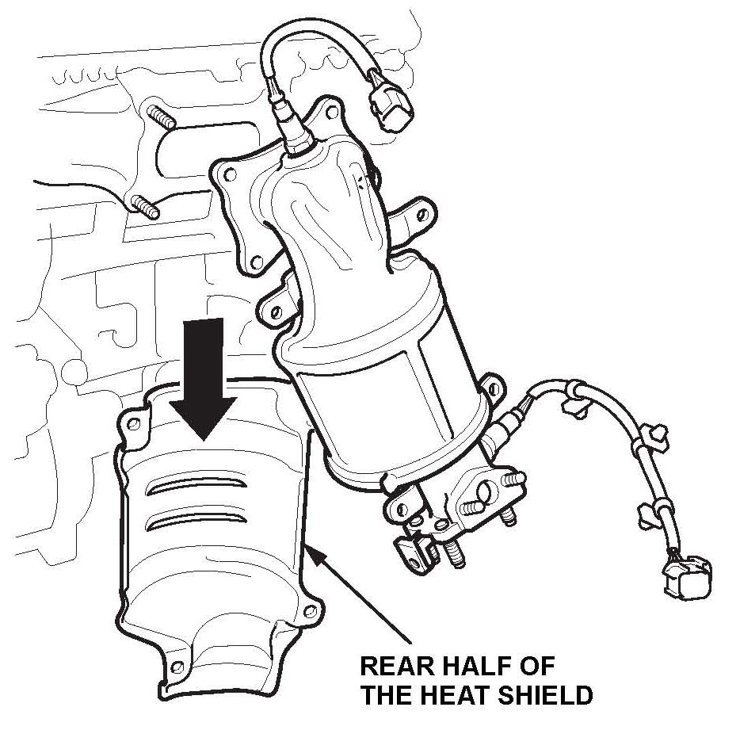
14. Carefully slide the warm-up TWC off the studs and remove the rear half of the heat shield.
NOTE:
Do not try to remove the warm-up TWC
from the vehicle because there is not enough room.
15. Install the new front and rear halves of the heat shield onto the warm-up TWC and leave the bolts finger tight.
NOTE:
2010-11 MDX only: The two bolts with a large washer go in the top holes.
16. Install the front warm-up TWC onto the cylinder head using a new gasket and new nuts. Tighten the nuts in a crisscross pattern in two or three steps to 31 N.m (23 lb-ft).
17. Torque the heat shield bolts to 12 N.m (8.7 lb-ft).
18. Install the A-pipe to the warm-up TWCs using new gaskets and nuts. Tighten the nuts to 54 N.m (40 lb-ft).
19. 2010-11 MDX only: Install the EGR pipe using new gaskets. Torque the lower nuts to 22 N.m (16 lb-ft), and leave the upper bolts finger tight.
20. Reinstall the lower front splash shield.
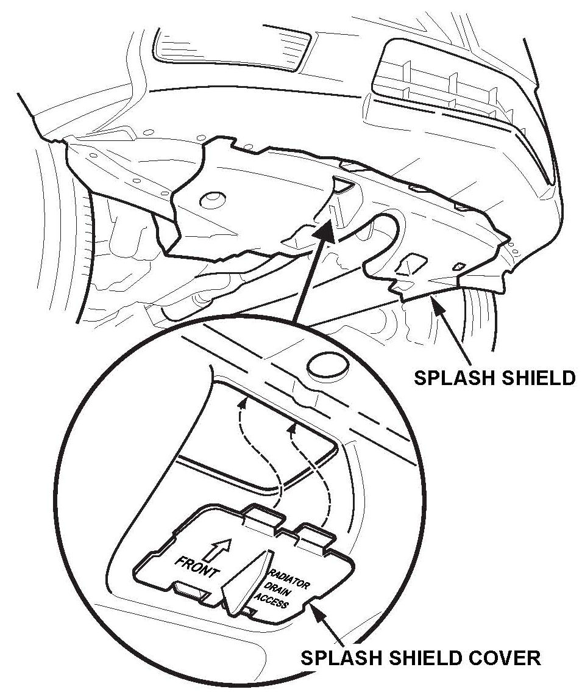
21. Install the splash shield cover into the splash shield below the radiator drain.
22. Lower the vehicle.
23. 2010-11 MDX only: Torque the EGR pipe upper mounting bolts to 22 N.m (16 lb-ft).
24. Remove the cardboard from between the front of the warm-up TWC and the radiator.
25. Reconnect the front (Bank 2) A/F sensor 6P and secondary HO2S 4P connectors.
26. 2010-11 MDX only: Reinstall the No.5 ignition coil and heat insulator. Torque the ignition coil mounting nut and heat insulator mounting nuts to 12 N.m (8.7 lb-ft).
27. Reinstall the engine cover.

Disclaimer